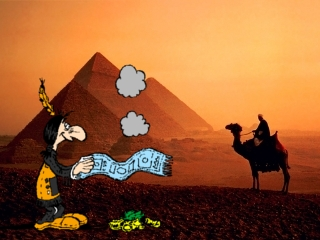

De: La Frikipedia, la enciclopedia extremadamente seria.
De: La Frikipedia, la enciclopedia extremadamente seria. De: La Frikipedia, la enciclopedia extremadamente seria.

|
FRIKIPEDIA QUIERE QUE ESTA DEFINICIÓN
PASE A SER UN ARTÍCULO FRIKIPÉDICO La información contenida en este artículo es una mínima parte de su jugo total, así que ponte los guantes, saca el tupperwere y empieza a exprimir el tema. Si lo haces serás recompensado con una galleta en almíbar y algo más. |
El smoksenger mejor conocido como "Mensajes instantaneos de humo" es una programa creado en el año 1220 A.c. por los egipcios, perteneciente a el paquete de programas por defecto en el distro "Abubis", el cual sirve para enviar mensajes a cualquier persona alrededor del mundo.
Sobre el circulo de rocas debes colocar un libro de secundaria partido en trocitos, encima del libro colocas los palos formando un cono ヘ, después con los cerrillos prendes el libro, colocas la manta encima de todo y la empieza a agitar.
El resultado debe quedar como la siguiente imagen:

Si te pareces a este wey persona seguiste bien los pasos.
Antes de empezar a escribir debes de agregar a un contacto, para ello solo debes de escribir el nombre de la persona en un papel y lanzarlo al fuego; Debes procurar que esa hoja no sea de una Death Note.
El smoksenger cuenta con un sofisticado lenguaje; Despues de seguir los anteriores pasos abres tu paquete de hojas y en una hoja escribes lo que desees, lo lanzas al fuego, mueves la manta y tu mensaje aparecerá.
Si te das cuenta que tu contacto no te responde (o solo quieres molestar) debes de recurrir al martillo, golpeando el suelo puedes enviarle un zumbido, dependiendo de que tan fuerte golpees sera la intensidad del zumbido, aparte tienes la posibilidad de enviar zumbidos ilimitados (¿apoco el Messenger puede hacer eso?)
...Cuando hay terremotos alguien envio un zumbido.
...el tio bill prefiere usar el smoksenger por que se cuelga menos.
...En Africa es el programa mas popular. ...7 de cada 5 geeks lo utilizan
Autor(es):